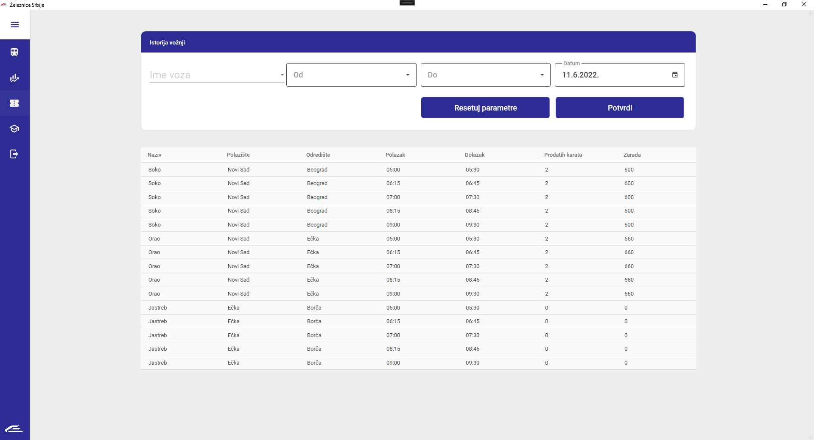

Istorija vožnji
Istorija vožnji sistema za upravljanjem železnice mogu se naći na navigacijom do stranice 'Istorija vožnji'.
Ona ima sledeći izgled.

U okviru pregleda istorije postoje 4 parametra po kojim možete da pretražujete istoriju.
Jedini obavezan parametar jeste datum po kom pretražujete. Osim toga,
možete pretraživati i po vozu, mestu polazišta i po mestu odredišta.
Nakon što odaberete parametre, klikom na dugme potvrdi prikazaće Vam se tabela sa svim relevantnim podacima.
Klikom na dugme 'Resetuje parametre' poništavate sve parametre.